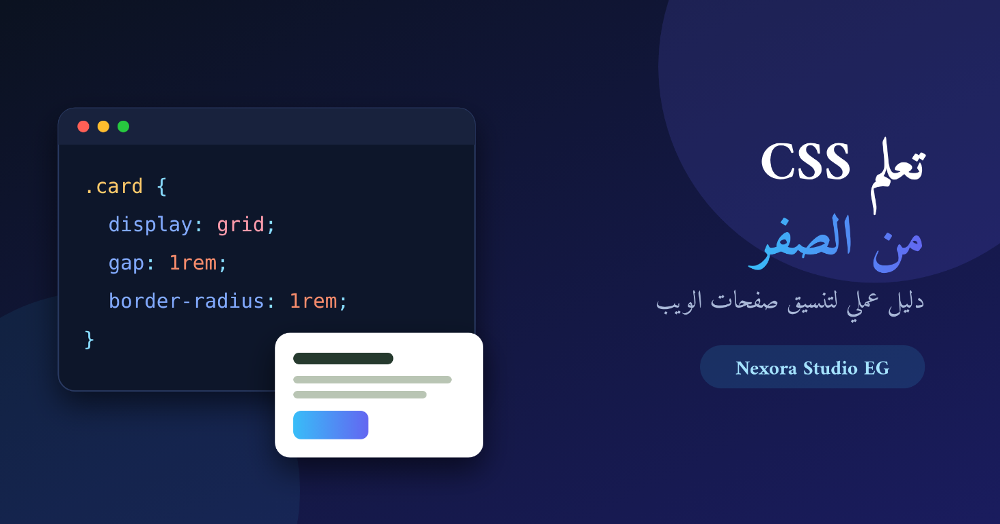
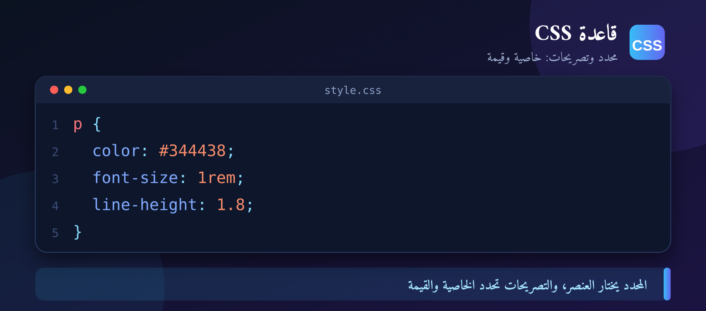
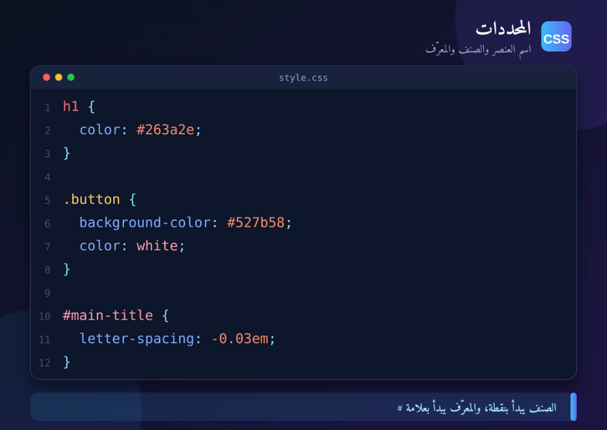
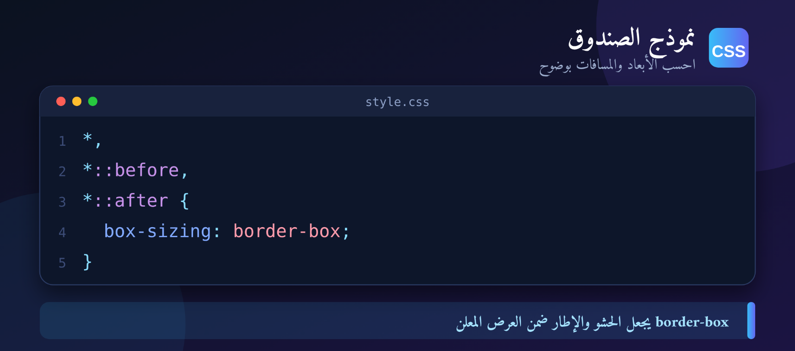
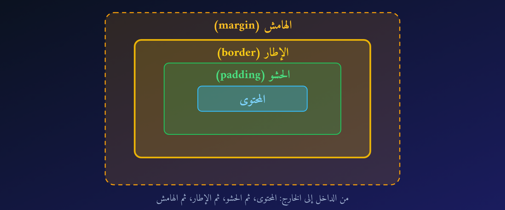
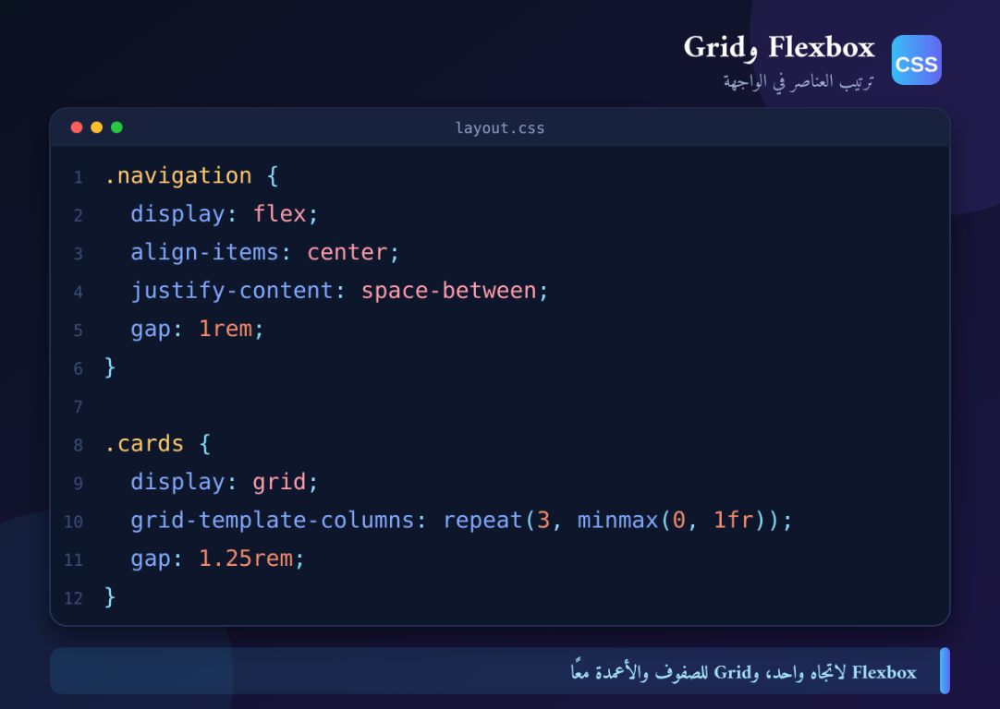
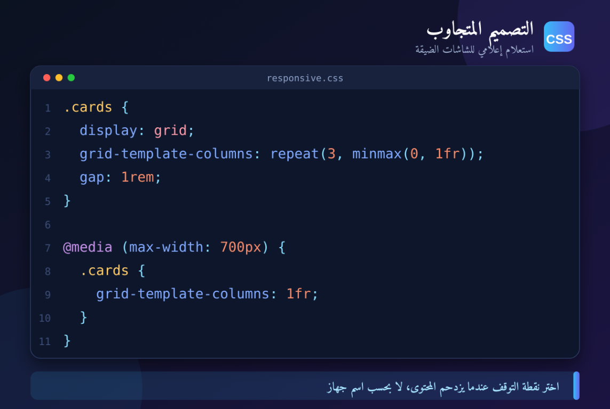
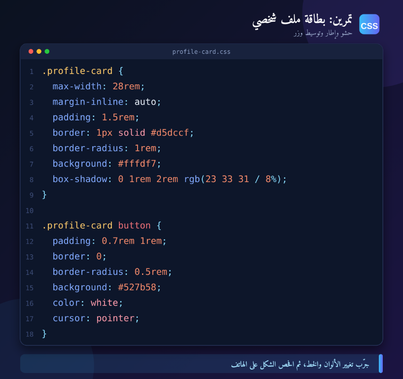

عندما ترى صفحة ويب مرتبة بألوان متناسقة وعناوين واضحة وتخطيط يعمل على الهاتف والكمبيوتر، فـ CSS هي التي تتحكم في جانب كبير من هذا المظهر. واسمها اختصار لـ Cascading Style Sheets، أي أوراق الأنماط المتتالية. سنبدأ بالمفاهيم التي تحتاجها لبناء تنسيق منظم بدل حفظ خصائص منفصلة.
ما دور CSS؟
تصف HTML بنية المحتوى ومعناه، مثل العناوين والفقرات والأزرار. أما CSS فتحدد كيف تظهر هذه العناصر: اللون والخط والمسافة والحجم، وكذلك كيفية ترتيبها وتكيّفها مع حجم الشاشة. وفصل المحتوى عن المظهر يجعل تعديل التصميم وإعادة استخدامه أسهل.
كيف تكتب قاعدة CSS؟
تتكون القاعدة من محدد يختار عنصرًا أو مجموعة عناصر، ثم مجموعة تصريحات بين أقواس معقوفة. كل تصريح يضم خاصية وقيمة:

في المثال، يختار المحدد p جميع الفقرات، ثم يحدد لون النص وحجمه وارتفاع السطر. ضع الفاصلة المنقوطة بين التصريحات، واستخدم مسافات بادئة ثابتة ليسهل عليك قراءة الملف.
المحددات: اختر العنصر الذي تريد تنسيقه
يختار محدد العنصر من HTML. من المحددات الشائعة اسم العنصر، والصنف، والمعرّف. الصنف مناسب لتنسيق عدة عناصر، فيما يُستخدم المعرّف عادةً لعنصر واحد ذي وظيفة مميزة.

أضف الصنف إلى HTML مثل <button class="button">، واكتب نقطة قبل اسم الصنف في CSS. أما المعرّف فيبدأ في المحدد بعلامة #. تجنب الإفراط في المحددات شديدة التخصيص حتى تبقى القواعد سهلة التعديل وإعادة الاستخدام.
التتابع والوراثة وخصوصية المحددات
قد تنطبق أكثر من قاعدة على العنصر نفسه. يختار المتصفح القيمة الفائزة وفق مصدر القاعدة وخصوصية المحدد وترتيب القواعد، مع أولوية أعلى عادةً للمحدد الأكثر تخصيصًا. بعض الخصائص، مثل لون النص، تُورّث غالبًا إلى العناصر الداخلية؛ بينما خصائص مثل الهوامش لا تُورّث عادةً.
لتقليل التعارض، ابدأ بمحددات بسيطة، واجمع القيم المتكررة في أصناف قابلة لإعادة الاستخدام، وتجنب الاعتماد على !important إلا عند وجود حاجة محددة.
نموذج الصندوق: افهم الأبعاد والمسافات
يتعامل المتصفح مع كل عنصر تقريبًا كصندوق. يتكون من المحتوى، ثم الحشو الداخلي padding، والإطار border، والهامش الخارجي margin. افتراضيًا قد يضاف الحشو والإطار إلى العرض المعلن، لذلك يساعد هذا الإعداد على جعل قياس العناصر أبسط:

border-box على تضمين الحشو والإطار ضمن العرض المعلن.
رتّب العناصر باستخدام Flexbox وGrid
Flexbox مناسب لترتيب العناصر في اتجاه واحد، أفقيًا أو رأسيًا، مثل شريط التنقل أو مجموعة أزرار. أما Grid فيناسب التخطيطات التي تحتاج صفوفًا وأعمدة معًا، مثل شبكة بطاقات.

ابدأ باختيار أداة التخطيط بحسب شكل الواجهة، ثم استخدم gap للمسافات بين العناصر بدل إضافة هوامش متفرقة يصعب ضبطها لاحقًا.
التصميم المتجاوب مع الهاتف
التصميم المتجاوب يجعل الواجهة ملائمة لأحجام الشاشات المختلفة. ابدأ بتخطيط مرن، واستخدم وحدات نسبية عند الحاجة، ثم أضف استعلامًا إعلاميًا عندما يحتاج المحتوى إلى تغيير ترتيب الأعمدة أو عددها عند عرض أضيق.

لا تختَر نقطة التوقف بناءً على أسماء أجهزة بعينها؛ ضيّق نافذة المتصفح وراقب متى يصبح المحتوى مزدحمًا، ثم أضف نقطة التوقف المناسبة. واختبر النصوص الطويلة والأزرار والصور، لا التخطيط وحده.
تمرين صغير لتجربة ما تعلمته
أنشئ بطاقة ملف شخصي تحتوي على عنوان ووصف وزر. اجعل عرضها مناسبًا للقراءة، وأضف حشوًا وإطارًا، ثم وسّطها باستخدام Flexbox أو Grid. جرّب تغيير اللون والخط، وافحص شكلها على الهاتف.

دورة CSS كاملة بالفيديو داخل المقال
يمكنك مشاهدة قائمة تشغيل دورة Learn CSS In Arabic 2021 من Elzero Web School مباشرةً هنا. شغّل الفيديو من المشغّل، وانتقل بين دروس القائمة من أدوات YouTube. لا تحتاج إلى فتح صفحة القناة أو مغادرة المقال لمشاهدة الفيديو المضمّن.
إذا لم يظهر المشغّل أو منعت إعدادات المتصفح تشغيله، افتح دورة CSS مباشرةً على YouTube. قد يعتمد التشغيل المضمّن على اتصال الإنترنت وتوفر الفيديو وإعدادات الخصوصية في المتصفح.
مصادر موثوقة لمواصلة التعلم
- دورة Learn CSS In Arabic 2021 — Elzero Web School: قائمة تشغيل محددة لدورة CSS، وليست رابطًا عامًا للقناة.
- أكاديمية حسوب: مقالات CSS: دروس عربية تطبيقية عن التنسيق وتصميم عناصر الويب.
- مسار تعلم CSS من MDN: دروس مرجعية للمبتدئين باللغة الإنجليزية، تشرح أساسيات التنسيق والتطبيق العملي.
- مواصفات CSS لدى W3C: المرجع الرسمي للمواصفات، وهو مفيد عند البحث عن السلوك الدقيق للغة.
الخلاصة
تعلّم CSS يصبح أسهل عندما تفهم القواعد الأساسية: كيف تختار العنصر، وكيف يحسب المتصفح المسافات والأبعاد، ومتى تستخدم Flexbox أو Grid. طبّق كل مفهوم في صفحة صغيرة واختبرها على أكثر من حجم شاشة، ثم استخدم دورة الفيديو والمصادر المرفقة للتوسع خطوة بخطوة.